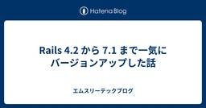

エムスリーテックブログ
https://www.m3tech.blog/
エムスリー(m3)のエンジニア・開発メンバーによる技術ブログです
フィード

インターンではじめてのプロダクト開発を経験した話【ソフトウェアエンジニアインターン参戦記】 6
6
エムスリーテックブログ
はじめに 11月末から2週間、エンジニアリンググループ AI・機械学習チームでの新卒ソフトウェアエンジニアインターンに参加した山口 (@chimaki_yama821)です。この記事では私が取り組んだことと2週間の感想について書いたので、エムスリーが気になっているという他の学生の参考になれば幸いです。 最終日に撮ってもらった写真
17時間前

「知ってるつもり」からの脱却：売上構造の解像度を上げるプロダクトマネジメント
エムスリーテックブログ
この記事はエムスリーAdvent Calendar 2024の19日目の記事です。 こんにちは。エンジニアリンググループ プロダクト支援チームでプロダクトマネージャーをしている中村です。私は現在、医師向けのライブ動画配信サービスである「Web講演会」というプロダクトにプロダクトマネージャーとして携わっています。今回の記事では、Web講演会のグロースに取り組む中での学びをご紹介します。 はじめに 「知らないこと」を認識する 「知らないこと」を知るためにやったこと フォーカスする（まずはみかんの売上を2倍に伸ばす） まとめ：プロダクトマネージャーは自信と謙虚さのバランスが大事 We are hir…
1日前

Javaバッチのクラウド移行プロジェクトの泥臭い挑戦 3
エムスリーテックブログ
この記事はエムスリー Advent Calendar 2024 の18日目の記事です。 こんにちは、基盤チームエンジニアの桑原です。最近はKeychron Q11を購入してキーボードライフを楽しんでいます。昨日はキースイッチの交換に失敗し、10年ぶりにはんだ付けをして何とか事なきを得ました。 はんだ付けしたら巨大な鉛の塊ができてしまったの図 本日は私が半期取り組んでいたJavaバッチのオンプレからクラウドリフトプロジェクトについて紹介します。なかなか泥臭い作業が多かったのですが、ありのままの仕事内容をお伝えします。 概要 システムの概要 プロジェクトの概要 プロジェクトの背景 脱オンプレを進め…
2日前

GPUで高速なモデル推論を実現するために考えること -FlashAttentionはなぜ高速か- 21
エムスリーテックブログ
こちらはエムスリー Advent Calendar 2024 17日目の記事です。 AI・機械学習チームの髙橋です。チームでは先週からNeurIPS読み会が開催されており、"Deep Learning Architecture, Infrastructure"という深層学習のアーキテクチャに関するセッションを担当しました。その中でも興味深い一本として"You Only Cache Once: Decoder-Decoder Architectures for Language Models"という論文を勉強会まとめブログで紹介してます。 www.m3tech.blog この論文ではLLMの推論…
3日前

友達の友達が多い！友達パラドックスについて 1
エムスリーテックブログ
エンジニアチームのUK. ( @ukohank517 )です。このブログはエムスリーアドベントカレンダー15日目の記事です。 今日は友達に関すパラドックス(Friendship Paradox)について紹介したいと思います！ はじめに 友達パラドックスとは？ 友達数のシミュレーションをしてみよう まとめ 追記 We are hiring !! エンジニアの採用ページはこちら カジュアル面談もお気軽にどうぞ インターンも常時募集しています はじめに 実は10年も前の論文で発表された内容なんですが、最近見かけて読んだら思わず「えっ、こんなことあるんだ！」と驚いてしまったんです。 気になる方はこちら…
3日前

リサーチプロダクトチームがここ最近やってることをざっくり紹介するぜ 4
エムスリーテックブログ
こんにちは、エムスリーエンジニアリンググループ/ BIR(Business Intelligence and Research) チーム の遠藤(@en_ken)です。 BIRはアンケートシステムをはじめとするリサーチプロダクトを開発しているチームです。チームの詳しい紹介は次の資料を読んでいただければと思います。 speakerdeck.com ここ1年ほどでチームの様相は様変わりしました。 一時期エンジニア3,4名ほどしかいなかったチーム状況から現在はエンジニアだけでも9名まで増え、PdMが2名参画したことで開発状況もこれまで以上に活況になってきています。開発スタイルも個人開発に近かったもの…
4日前

NeurIPS2024が開催中なので、エムスリー AI・機械学習チームの推し論文を勝手に紹介するぜ！ 10
エムスリーテックブログ
こんにちは。エンジニアリンググループのAI・機械学習チームに所属している鴨田 です。 このブログはエムスリーアドベントカレンダー14日目の記事です。 弊チームでは毎週1時間の技術共有会を実施しており、各自が担当するプロダクトの技術や、最近読んだ論文を紹介しています。今週はNeurIPS2024が開催されていることもあり、同学会の論文読み会となりました。1セッション1名の担当で、各自がセッション内で気になった論文の詳細を解説します。本ブログではその一部として、セッションごとの「推し論文」を紹介します。 DALL-E 3で生成した「機械学習エンジニアが勉強会でお気に入りの記事について楽しそうに雑談…
6日前

【pmconf 2024】クライス&カンパニーのDiscord企画振り返り：プロダクトマネージャーにとってのホームランとは？ 5
エムスリーテックブログ
こんにちは、こんばんは。今年も年末年始は12/25〜1/5まで連休を取ってみた取締役CTO兼VPoPの山崎です。最近はUL装備*1を充実させる日々を過ごしております。 本ブログはプロダクトマネージャー Advent Calendar 2024の14日目の記事です*2。 プロダクトマネージャー Advent Calendar 2023は乗り遅れて枠を取れなかったのですが、その前のプロダクトマネージャー Advent Calendar 2022には以下の記事をポストしていますので、是非ごらんください。 www.m3tech.blog 先日のUL装備キャンプ。Enlightened Equipmen…
7日前

gitレポジトリ考古学に使う道具 105
エムスリーテックブログ
こちらはエムスリーAdvent Calendar 2024 13日目の記事です。 こんにちは、エムスリーエンジニアリンググループの福林 (@fukubaya) です。 今回は、長年運用されてきたレポジトリをgitを使って発掘する上で使っている道具を紹介します。 福岡タワー（ふくおかタワー）は、福岡県福岡市早良区のシーサイドももち地区にあるランドマークタワー（電波塔）。本文には関係ありません。 帳票環境 レポジトリからDBテーブルの使用箇所を探す スケジュール設定だけ消される gitレポジトリ考古学 ファイルが消えたコミットを知りたい ある記述が消えた(追加された)コミットを知りたい あるテーブ…
7日前

Rails 4.2 から 7.1 まで一気にバージョンアップした話 51
エムスリーテックブログ
こちらはエムスリー Advent Calendar 2024 12日目の記事です。 こんにちは。エムスリーエンジニアリンググループ、コンシューマチームの園田です。 今年になって、かなり古い Rails を最新バージョンまでアップグレードしました。そのときの話です。かなりポエムに近い内容になっていますがご容赦ください。 特に何か変わったことをやっているわけではありませんが、あるあるを共感したもらったり、こんなことやってますという紹介だと思っていただければ幸いです。
8日前

BigQueryのLanguage Serverであるbqlsを作っている話
エムスリーテックブログ
AI・機械学習チームの北川(@kitagry)です。 このブログはエムスリーアドベントカレンダー11日目の記事です。 このブログではタイトル通りOSSで作成しているbqlsというLanguage Serverについて紹介します。 github.com 座ってたら遊んでほしすぎて絡んでくる猫（本文とは関係ありません）
9日前
ミッションはグループ会社のTRANSFORM - グループ会社支援チームのご紹介
エムスリーテックブログ
こちらはエムスリー Advent Calendar 2024 10日目の記事です。 エンジニアリンググループ、プロダクトマネージャーの岩田(@a___iwata)です。 以前、「目指すは企業価値最大化！？ グループ会社支援チームのご紹介」というタイトルでグループ会社でのエンジニア・デザイナー組織作りの記事を書きました。 www.m3tech.blog 組織ができあがったら、次はプロダクト作りです。ということで、（やや強引ですが）グループ会社のTRANSFORMを題材とします。 前提：TRANSFORMとは イノベーションには実験が不可欠！ - 言うは易く行うは難し - プロダクトチームへの信頼…
10日前
TypeScriptで型レベル四則演算
エムスリーテックブログ
こちらはエムスリー Advent Calendar 2024 9日目の記事です。 こんにちは。4月に新卒でデジスマチームにジョインしたソフトウェアエンジニアの池奥です。先日京都で開催されたTSKaigi Kansai 2024ではコアスタッフとして活動していました。 私の所属するデジスマチームではフロントエンドにTypeScriptが採用されており、型の柔軟性を活かした実装をたびたび見かけます。そこで今回は、TypeScriptの型ともっと仲良くなるべく、型レベルで四則演算のパーサーから実行器まで実装した話をお送りします。 今回作成したプログラムを利用すると、次のような計算を型レベルで行うこと…
11日前
Firebase AuthenticationでメールリンクパスワードレスかつCookieによる半永続的セッションを実現する
エムスリーテックブログ
こちらはエムスリー Advent Calendar 2024 8日目の記事です。 AI・機械学習チーム(以下、AIチーム)の中村伊吹(@inakam)がお送りします。 社内横断的に機械学習周りをなんでもやるをモットーにするAIチームですが、現在私はクライアント向けに認証機能が組み込まれたプロダクトを開発しています。 認証要件は次のようになっており、これをFirebase Authenticationで実現する方法をこの記事では解説します。 なお、Firebaseの導入についてはこの記事の範囲外とします。*1 メールリンクを用いてパスワードレスに認証する セッション情報をCookieに保持する …
12日前
リモートワーク時代を生き抜くAI・機械学習チームの働き方
エムスリーテックブログ
こちらはエムスリー Advent Calendar 2024 7日目の記事です。 前日は大垣さんのアニメキャラらしさ姓名判断師AIを作る ~字画に注目したモデリング~でした。とても面白いのでそちらもどうぞご覧ください。 はじめに こんにちは。AI・機械学習チームの氏家（@mowmow1259）です。 今回のテーマはリモートワークです。 最近オフィス回帰の流れがあるとはいえ、リモートワークを導入する企業はコロナ禍以前と比べて確実に増えてきています。 エムスリーでも2021年からリモート勤務がベースとなっており、さらに最近では関西と九州にもサテライトオフィスができるなど、全国各地からリモートワーク…
13日前
アニメキャラらしさ姓名判断師AIを作る ~漢字の字画に注目した識別器モデリング~
エムスリーテックブログ
こんにちは、テックブログでは業務と全く関係ないMLをやるのが好きなエンジニアリンググループゼネラルマネジャーの大垣です。 私は普段は就業後は妻とアニメを観ていることが多いんですが、先日"地面師たち"を観てから、我が家ではドラマが一時的なブームとなっています。 最近見ている"全領域異常解決室"では、日本神話の神が転生して人間として暮らしているという、アニメっぽいトンデモ設定でちょっと好きです。 例えば、アメノウズメノミコトは天野さんとして暮らしています。 そういう夢のある話を想像すると、みなさんも日常に潜む神を見つけ出したくなりますよね！ということで、今回は姓名判断師AIを作ります。 私はやっぱ…
14日前
KubernetesとPyTorch Lightningによる医療AI開発環境とそのTips
エムスリーテックブログ
こちらはエムスリー Advent Calendar 2024 5日目の記事です。AI・機械学習チームの三浦 (@mamo3gr) が、深層学習に基づく医療AIの開発環境とTipsについてお送りします。 DALL-E 3が生成した「巨大クラスタによるAI開発」のイメージ図 Kubernetesクラスタよる医療AIの開発 モデルの性能改善に注力できるフレームワークPyTorch Lightning デバイス特有のコードを書かなくてよい 学習ログやチェックポイントの保存機能が充実している 細かなユーティリティ関数やクラスの実装がある ハマりポイントとワークアラウンド 学習ログファイルを正しく保存する…
15日前
Grad-CAMで注目されている部分をぼかすとどうなるの？
エムスリーテックブログ
こちらはエムスリー Advent Calendar 2024 4日目の記事です。 こんにちは、最近ニューラルネットの可視化についての論文を読んだAI・機械学習チーム(AIチーム)の農見(@rookzeno)です。ニューラルネットの可視化で有名なものといえばGrad-CAMだと思いますが、僕が読んだ論文ではstructured attention graphs (SAGs)という可視化の手法を使ってました。これは平たく言えばニューラルネットが予測できる画像の最小限の部位はどれかを出すものです。 目と鼻と口以外はぼかしてても画像モデルが正しい予測ができる この方法の良さとしては、複数の注目部位が得…
16日前
Protocol を使って、ML パイプラインツール gokart のパラメーター拡張機能を作ってみた
エムスリーテックブログ
はじめに TL;DR gokart とは gokart におけるキャッシュの仕組み gokart におけるパラメーターの再利用の仕組み luigi.Config の利用方法 run の中でグローバルなパラメーターとして呼び出す方法 具体的な設定例 課題 継承でパラメーターを共通化する方法 具体的な設定例 課題 gokart.SerializableParameter を利用したパラメーターの共通化 目指すべきパラメーターの共通化方法 gokart.SerializableParameter の使い方 gokart.SerializableParameter の仕組み Tips: 一部のパラメー…
17日前
MLOpsの「あるある」課題の解決と、そのためのライブラリgokart
エムスリーテックブログ
こちらはエムスリー Advent Calendar 2024 2日目の記事です。 こんにちは、AI・機械学習チームの池嶋（@mski_iksm）です。 近年、機械学習は多くのアプリケーションで当たり前のように使われるツールになりつつあります。ですが機械学習は、ライブラリを呼び出すだけで簡単に使える、というわけにはいかない特有の難しさもありますよね。 例えば、モデルの学習実験を試行錯誤しながら何度も繰り返しているうちに、「どのデータを使い、どんな設定で学習させたモデルが一番良かったのか分からなくなった」という経験はないでしょうか。 また、本番環境で使用するモデルが実験環境で作ったものを再現できず…
18日前
日本語埋め込みモデルRuriを使ったBM42 on Elasticsearchと形態素解析器Sudachiによるトークン矯正
エムスリーテックブログ
Qdrantが開発した新しいスコアリングアルゴリズムであるBM42を簡単に紹介し、それをElasticsearch上で構築する方法とその所感をお話しします。さらに形態素解析器のSudachiを使って類似語展開やトークン修正を行ない、BM42の精度を矯正する方法を試したのでその紹介をします。
19日前
Type Level Runtime for AWS Lambda
エムスリーテックブログ
こんにちは、デジスマチームでエンジニアをやっている堀田です。 先日、社内のTechTalkで「TypeScriptをAWS Lambdaで実行する」というテーマで話をしました。 TSは型で色々できるのだから、Lambdaの実装を型だけでやれたら嬉しいですよね？という内容です。 この記事ではその時の話を紹介します。
21日前
関西と九州でエンジニアが働けるサテライトオフィスができました
エムスリーテックブログ
はじめに 皆様こんにちは、こんばんは。 最近のアークナイツの盛り上がりがたまらない、VPoEの河合(@vaaaaanquish)です。 自分のキャリアを選ぶ次女。欲張りです。本文とは関係ありません さて、タイトルの通り、エムスリーエンジニアリンググループは、関西と九州でエンジニアが働けるサテライトオフィスができました（というより出来てました！半年前に！笑）。 実際既に大阪、京都、福岡で働くエンジニアが在籍しており、サテライトオフィスのアピールも兼ねてと「サテライトオフィスブログリレー」を開催しています。 本記事では、VPoEとして私河合が「サテライトオフィス創設のねらい」について書いていきます…
1ヶ月前
入社 4 ヶ月の私が初見コードでも開発のスタートダッシュを切る技術
エムスリーテックブログ
はじめに 前提となるマインドセット 具体的な Tips コードを読まずに理解する技術 とりあえず Clone する インタフェースで理解する テストコードで理解する 慣習名で理解する コードの詳細を理解する技術 デバッガを使う とりあえずサンプルコードを書いてみる 分からないなら聞く 初見コードに安全に変更を加える技術 インタフェースを明らかにする Stub としての実装を用意する Design Doc を書く テストを書く まとめ We are hiring !! エンジニア採用ページはこちら カジュアル面談もお気軽にどうぞ インターンも常時募集しています はじめに 京都オフィス在籍で、AI…
1ヶ月前
エムスリー福岡Quineを作りました！
エムスリーテックブログ
突然ですが、次のM3柄のソースコードをPython（>=3.8）で実行し、実行結果を入力に何度か繰り返し実行してみてください！ 結果はどうなるでしょうか？ exec("""m=lambda_x:"".join(x.split()).replace("~"+"~",chr(32))""".replace("_",chr(32)),globals());exec(s:= m('''s="""exec(\\"\\"\\"m=lambda_x:"".join(x.split()).replace("~"+"~",chr(32))\\"\\"\\".replace("_",chr(32 )),globa…
1ヶ月前
Genericやらoverloadやらを使って、MLパイプラインツールgokartを型安全にしてみた
エムスリーテックブログ
AI・機械学習チームの北川(@kitagry)です。 このブログはサテライトオフィスのメンバーで投稿されるブログリレー１日目の記事になります。1 サテライトオフィスブログリレーとある通り、４月から京都オフィスに在籍しています。 最近京都オフィスメンバーで居酒屋に行ったりしたのですが、やはり関西めっちゃ安い。。 みんなおいでよと思っているところです。 本ブログではエムスリー株式会社がOSSとして公開しているgokartというPythonツールの型を強化した話について書きます。 Python3.5から型ヒントの機能が追加され、現在最新のPython3.13に至るまでに徐々に機能が追加されています。…
1ヶ月前
エムスリーが技術書典17で新刊を出します！
エムスリーテックブログ
エムスリーエンジニアリンググループ AI・機械学習チームでソフトウェアエンジニアをしている中村(@po3rin) です。 技術書典17が2024/11/03に開催されます。（オンライン開催は11/02〜11/17） 今回エムスリーでは有志で新刊を携えて参戦します。過去最大の210ページの大ボリュームでお届けします。今回も多様な分野・技術について弊社スタッフが執筆いたしました。エムスリーのギークな面がふんだんに詰まった一冊となります。 オンラインでの購入は11/02以降、こちらからも可能です！ techbookfest.org この記事では皆さんに新刊を手に取ってもらえるように、各章がどんな内容…
2ヶ月前
チームで培われたベストプラクティスをlintとして周知する
エムスリーテックブログ
こんにちは。AI・機械学習チームの氏家（@mowmow1259）です。 エムスリー福岡オフィスの一人目のエンジニアとして福岡で働いています。 マクドナルドの月見バーガーが好きで、今年も発売開始当日に食べに行きました。 私が所属するAI・機械学習チームでは基本的に2週間から1ヶ月程度で新規プロダクトをリリースするなど、高速にプロダクトを開発しています。 その過程で、「この書き方は落とし穴があるから使わない方がいい」といった開発に際したベストプラクティスが溜まっていきます。 そういったベストプラクティスはレビューでの指摘や技術共有会*1でチームに浸透してきますが、レビュー負荷や新メンバーへの周知な…
3ヶ月前
プロダクトの成長を加速させる会議：エムスリーのプロダクトマネージャーが実践する「合宿」とは
エムスリーテックブログ
こんにちは。エムスリー エンジニアリンググループ プロダクト支援チームでプロダクトマネージャーをしている中村です。 今回の記事では、プロダクト支援チームのプロダクトマネージャー陣が活用している「合宿」と呼ばれる会議をご紹介します。「合宿」と言っても、泊まりに行くわけではなく、オフィスの会議室に集まって2時間程度集中してプロダクトについて議論する場を指します。エムスリーのプロダクトマネージャー陣は、この「合宿」という場を活用し、プロダクトビジョンや戦略について議論を深めています。 はじめに 「合宿」とは 議論の流れ ステップ1 ステップ2 ステップ3 「合宿」の効果 まとめ We are hir…
3ヶ月前
エムスリーエンジニアリングフェローに山本舜さんが就任しました！
エムスリーテックブログ
エンジニアリンググループHRBPの我如古です。この度、山本舜さんにエムスリーエンジニアリングフェローに就任いただくことになりましたのでお知らせいたします。 エムスリーエンジニアリングフェローとは 在籍中または卒業後に顕著な活躍をしたエンジニアに対して、エムスリーを卒業しても継続的にフェローとして称えるものです。また、エムスリー卒業生として定期的な意見交換を行ったり、エムスリーとエンジニアコミュニティをつなぐハブを担ってもらうという役割もあります。卒業は寂しいですが、新たな関係性のスタートですので引き続き仲間として良好な関係を築いて行きたいと思います！
3ヶ月前